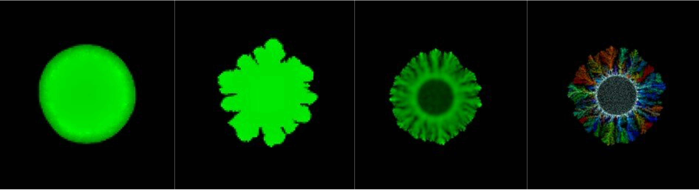
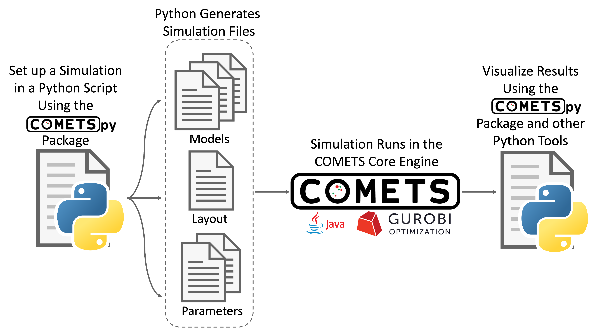

Introduction
What is COMETSpy?
COMETS is a software platform for performing computer simulations of metabolism in spatially structured microbial communities. It is based on stoichiometric modeling of the genome-scale metabolic network of individual microbial species (using dynamic flux balance analysis), and on a discrete approximation of convection-diffusion equations.
{kind=link}
COMETSpy is a Python package that provides a user-friendly interface to COMETS. It allows users to easily set up and run simulations, and to analyze the results. COMETSpy is designed to be used in conjunction with COMETS. It is not a standalone package, and requires COMETS to be installed on the user’s computer.
{kind=link}
How to use this Documentation:
This documentation is meant to aide users in installing COMETSpy and using COMETSpy to run simulations and analyze the results. If you need help and do not easily find an answer in this documentation, ask your question in a new issue on GitHub. Any question that you have likely indicates a shortcoming in the documentation, which we will want to fix!
Find the module/class/function that you are interested in using in the table of contents on the left or in the following indices, click on the link to go to the appropriate documentation:
For a class, the documentation will include a brief description of the class, the parameters that the class takes, and a list of all attributes, and examples of how to use the class. The documentation will also include a list of all the methods that are available for that class.
For a function, including the methods for a class, the documentation will include a description of what the function does, a list of the parameters that the function takes and the objects that the function returns, and examples of how to use the function.
Cite Us:
The newest version of COMETS, which was developed as a partnership between researchers at Boston University, Yale University and the University of Minnesota is fully described in the following paper: